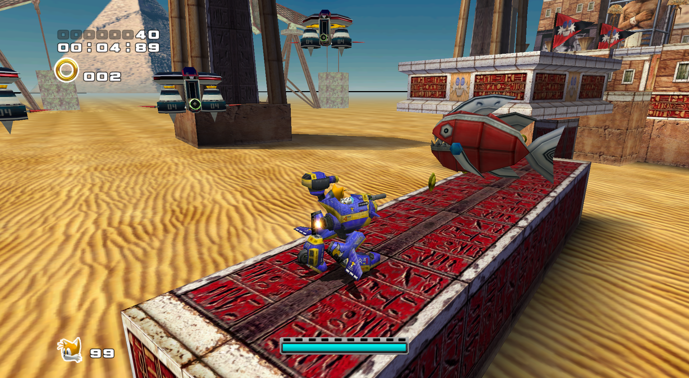
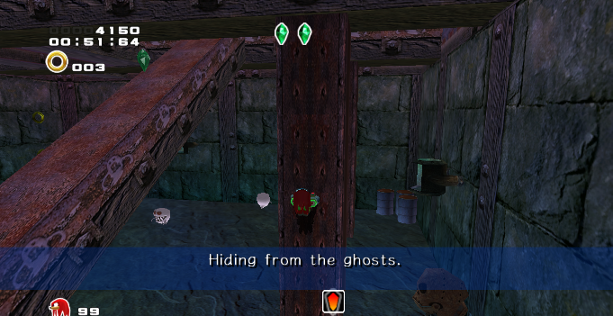

Since 2016, I have been a pioneer of the modding scene for the PC version of Sonic Adventure 2: Battle. I have completed several mods focusing on editing the game's levels to improve them in some fashion. All of these were released to good acclaim and have been iteratively updated to incorporate feedback, fix bugs, and add new content.
Use this link to visit the public releases of my mods.The process of creating these mods primarily involves using a level data editor to reconfigure parameters for enemies, interactables, etc. according to object-specific needs; I also reverse-engineered those, which can be found in the SA2 Research project. Additionally, I compiled DLL in C++ for direct changes to the game's assembly such as pointer addresses to add object types. Below, I shall highlight my two greatest mod projects.
Super Hard Mode builds on the game's existent Hard Mode, which edits the normal levels to add extra challenges. I was involved in the game's speedrunning scene for several years, and even the Hard Mode ceases to be much of a challenge at the skill level needed to be a decent speedrunner. Armed with this knowledge, I thoroughly analyze every part of the level and create challenges that require mastery of the controls and utilize the maximum extent of what the game is capable of producing. There's a surprising amount of object functionality that the game was programmed to do but never utilizes.
One of the game's three playstyles requires finding three randomly selected collectibles in an open, 3D environment. The collectibles, known to the community as pieces, are not randomly generated, instead being selected from pre-created locations stored in the game's files. Each location is themed on a specific asset in the stage, which becomes identifiable by a set of hints specific to that collectible.
The Piece Expansion mod overwrites over a hundred of these locations to more unique ones, as the creation of brand new collectibles is not currently possible. There are many sets of locations that are near-identical to each other, and some that are unused, and I targeted these ones to diversify the selection as much as possible. This required careful analysis of both the finest details and the greater piece distribution in each stage, so that I could find the most meaningful locations for new pieces.